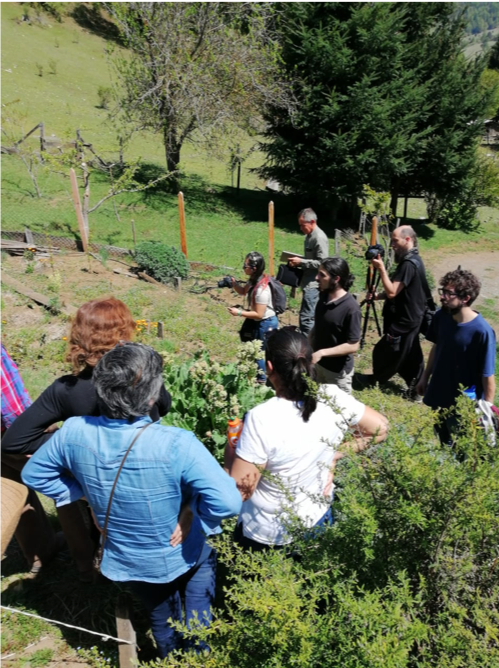

Académica y estudiante de la Escuela de Geografía participaron del I Congreso chileno de Agroecología.
Agosto 18, 2019 02:00 pmDurante los días 17 y 18 de Octubre de 2019, se realizó en el Campus Pucón de la Universidad de La Frontera , el 1° Congreso Chileno de Agroecología, organizado por La Universidad de La Frontera y el capítulo chileno de la Sociedad Científica Latinoamericana de Agroecología (SOCLA-Chile), se realizará. El lema del congreso es “Agroecología: trascendiendo las prácticas hacia la sustentabilidad alimentaria”. El congreso abordó temáticas vinculadas al desarrollo rural, prácticas y manejo agroecológico, sistemas alimentarios, sociedad y medioambiente, agroecosistemas y servicios ecosistémicos.
Durante el congreso, la Dra. Carla Marchant y el estudiante Santiago Kaulen presentaron los resultados de la investigación titulada “Re-conociendo los conocimientos agrícolas en las huertas familiares mapuche -pehuenche y campesinas del sur de Chile”, trabajo realizado en la comuna de Curarrehue, Región de la Araucanía en conjunto con la cooperativa de mujeres Zomo gnen, en le marco del proyecto Fondecyt 11140493. En este trabajo se reconoce el valor del patrimonio agroalimentario conservado por mujeres campesinas y mapuche – pehuenche y se plantea el desarrollo una estrategia de desarrollo territorial de carácter no solo económico, sino que también social, política, cultural y ambiental propio del territorio, que nace y funciona principalmente gracias a la asociatividad y organización de la cooperativa junto a sus familias, empoderándose y generando autonomía de su territorio y la forma en que quieren desarrollar y guiar el turismo en sus espacios de vida.